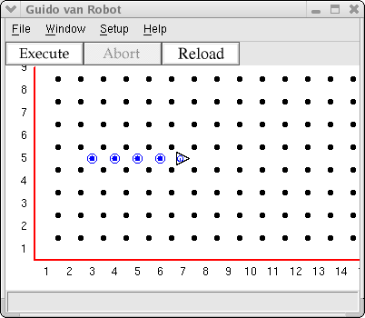

You discovered that the initial robot placement was of the form:
Robot 1 2 N 0
where the numbers are:
row column initial direction (N, W, S, or E) number of beepers.
Beepers? What are they? A robot can carry beepers, which are little sound devices Guido can hear. Guido can pick them up or put them down, all at your command. A beeper is a device that Guido can hear only when it's located on the same corner he's on. Guido has a beeper-bag he can use to carry beepers he picks up. He can also take beepers out of the bag and place them on the corner he occupies. You specify the initial number of beepers in your world file.
The commands to work with beepers are included in the basic robot commands you will explore. The complete list is:
move turnleft pickbeeper putbeeper turnoff
Put a robot with four beepers at the corner of 1st Avenue and 5th Street facing east. He should go two blocks east, drop one beeper, and then continue going one block and dropping a beeper at each intersection until he is out of beepers. Then he should take one more step and then turn off. When he has finished, the display should look like this:

Copyright © 2003 Roger Frank.